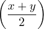
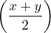
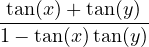
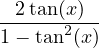
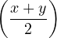
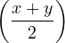

| cos(x) + cos(y) | = 2sincos | |
| cos(x) − cos(y) | = −2sin cos cos |
|
| sin(x) + sin(y) | = 2coscos |
| cos(x + y) | = cos(x)cos(y) − sin(x)sin(y) | |
| sin(x + y) | = sin(x)cos(y) + cos(x)sin(y) | |
| tan(x + y) | =  |
| cos(2x) | = cos2(x) − sin2(x) | |
| = 2cos2(x) − 1 | ||
| = 1 − 2sin2(x) | ||
| sin(2x) | = 2sin(x)cos(x) | |
| tan(2x) | =  |
| cos(x) + cos(y) | = 2sincos | |
| cos(x) − cos(y) | = −2sincos |
|
| sin(x) + sin(y) | = 2coscos |
| cos(x)cos(y) | = (cos(x + y) + cos(x − y)) | |
| sin(x)sin(y) | = − (cos(x + y) − cos(x − y)) (cos(x + y) − cos(x − y)) |
|
| sin(x)cos(y) | =  (sin(x + y) + sin(x − y)) (sin(x + y) + sin(x − y)) |